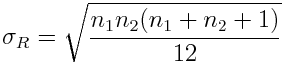
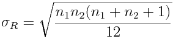

Statistics > Nonparametrics > Wilcoxon Rank Sum Test
This utility performs calculations for the Wilcoxon Rank Sum Test
(also known as Mann-Whitney),
which is a non-parametric test that uses ranks of samples from two
independent populations to test whether two populations have the
same distribution.
The null hypothesis H0 of a claim is
median1 = median2.
The alternative hypothesis H1
can be one of the following: median1 < median2,
median1 > median2, or
median1 ≠ median2.
Let n1 be the size of sample 1 and
n2 be the size of sample 2. The two samples are
combined into one and then ranked, with the smallest sample given rank 1,
second rank 2, etc. If two or more samples are tied, their ranks are
averaged.
The rank sums are calculated as follows:
- R1 = sum of ranks for sample 1
- R2 = sum or ranks for sample 2
- R = R1
Let μR and σR
be the mean and standard deviation or the sample R values that is expected
when the two populations have the same distribution, respectively:
 

Using normal approximation, the test statistic is
A continuity correction of +0.5 is used for a left-tailed test, and -0.5 is
used for a right-tailed and two-tailed test.
The p-value, where z is a
random variable representing the z-score is computed as follows:
- Left-tailed test: P(z ≤ zR)
- Right-tailed test: P(z ≥ zR)
- Two-tailed test: 2P(z ≥ zR)
if zR > 0 or 2P(z ≤ zR)
if zR < 0
.
To use the utility, follow these steps:
- For inputs,
select the names of the two sample columns in the corresponding drop-down menus.
- Select the form of the alternative hypothesis in the
Alternative Hypothesis: drop-down menu.
- Provide the significance level of the test (between 0 and 1).
- Click the OK button to perform the computation. The
results will be displayed in the log window.